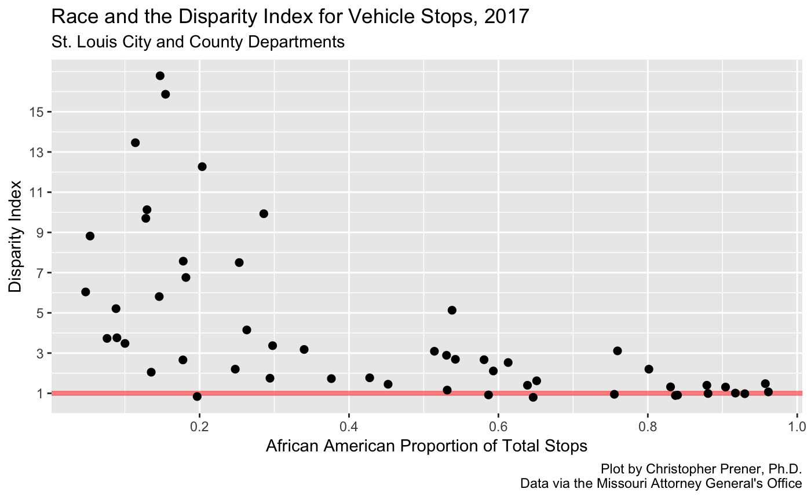
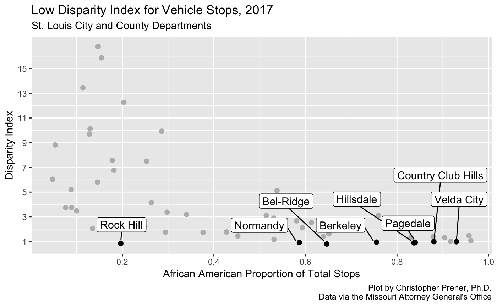
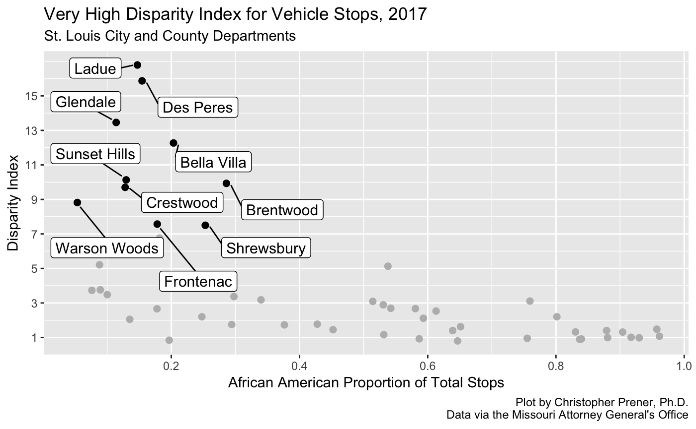
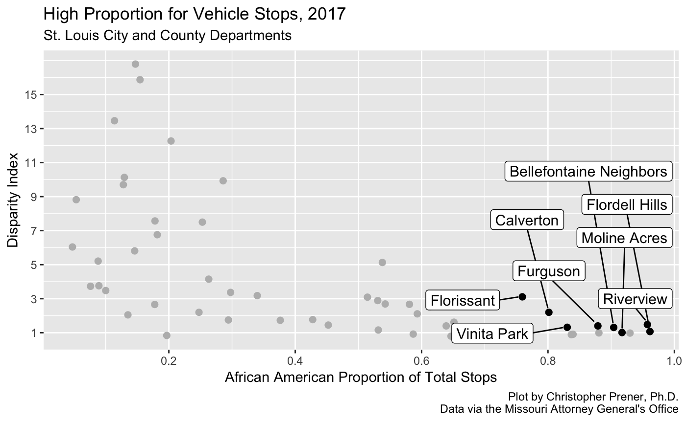

vignettes/analysis-2017-vehicle-stops.Rmd
analysis-2017-vehicle-stops.RmdIn exploring the Missouri Attorney General’s Office annual vehicle stop reports, it has become clear that the metrics they provide do not tell the full story when it comes to vehicle stops. This article breaks down a cross sectional data set of vehicle stop and disparity index data from 2017 for 52 police departments in St. Louis County as well as the St. Louis Metropolitan Police Department, which primarily serves the City of St. Louis.
The two measures we’ll be looking at are the African American proportion of total vehicle stops in 2017, as well as the disparity index. The disparity index is a positive value that revolves around the value of 1:
For example, if a group accounts for 80% of the driving-age population, and 80% of traffic stops involve members of that group, then the disparity index for that group would be 1.
Disparity index values that are greater than 1 indicate that a group is being stopped more than we would expect:
The same is not the case for several of the other groups. African-Americans represent 10.9% of the driving-age population but 18.7% of all traffic stops, for a disparity-index value of 1.72. African-Americans were stopped at a rate 72% greater than expected based solely on their proportion of the driving-age population.
So, a disparity index value of 2 would indicate that they are being stopped at a rate 100% grater than expected, a value of 3 would indicate that they are being stopped at a rate that is 200% greater, and so on.
The Attorney General’s office admits that this is an imperfect measure:
Importantly, the disparity index relies on a group’s proportion of the State’s driving-age population, as determined by the 2010 Census, not the proportion of the actual drivers who are on the State’s roads. A group’s share of the residential population age 16 and over may or may not equal its proportion of drivers.
Moreover:
In addition, some jurisdictions contain attractions—such as malls, universities, and airports—that may draw visitors from outside that jurisdiction. The demographics of these out-of-jurisdiction visitors may differ from the Census demographics of the jurisdiction. The disparity index does not account for these and other deficiencies in the data. Where these deficiencies are especially pronounced, especially at the level of individual jurisdictions, the disparity index may not accurately portray the relevant rates at which drivers of different races are stopped.
Given these caveats, we’ll pay particular attention to how the disparity index captures variation in the numbers of African Americans who are being stopped in St. Louis City and County.

Our first plot compares the African American proportion of stopped motorists to the disparity index value for each of the 53 police departments included in our sample. We can see that there is some wide variation - we have a number of departments with very high disparity index values. These departments all stop relatively small proportions of African American drivers, however. On the other end of the plot, there are quite a few departments that stop African Americans almost exclusively - five departments have stop rates that are more than 90% African American.

There are also a few departments that do not appear to be systematically targeting African Americans based on the disparity index alone. Some of these departments are among those that stop very high proportions of African American drivers. This is an important takeaway - the proportion of drivers stopped can be misleading as well - despite black drivers making up over 90% of the drivers stopped in Velda City, for example, this proportional relative to what we would expect based on the population.

This third plot focuses on the opposite phenomenon - it highlights departments that have a disparity index over 7, i.e. they are stopping African Americans 600% more than we would expect given their proportion of the driving age population. At first blush, this seems deeply problematic. However, it is worth pointing out that some caution is needed here.
| agency | prop | count | disp |
|---|---|---|---|
| Ladue | 0.15 | 281 | 16.79 |
| Des Peres | 0.15 | 84 | 15.87 |
| Glendale | 0.11 | 233 | 13.46 |
| Bella Villa | 0.20 | 353 | 12.27 |
| Sunset Hills | 0.13 | 528 | 10.13 |
| Brentwood | 0.29 | 418 | 9.93 |
| Crestwood | 0.13 | 304 | 9.70 |
| Warson Woods | 0.05 | 11 | 8.82 |
| Frontenac | 0.18 | 401 | 7.57 |
| Shrewsbury | 0.25 | 837 | 7.50 |
If we take a look at the table, which corresponds to the plot above, we can see the number of African American drivers stopped (along with their proportion relative to the total number of drivers stopped). Warson Woods and Des Peres illustrate perfectly the problems with these extreme disparity values - very few African American drivers were stopped by either department. However, because the St. Louis area is so segregated, even stopping 11 black drivers (as Warson Woods did) can yield extremely high disparity index values.
The data on Brentwood also illustrate the problem that was noted above about areas that might attract visitors from outside the municipality. Brentwood is home to a large amount of shopping, and that may account for the very high disparity index value shown here. This does not mean Brentwood is not targeting drivers systematically, only that caution is needed in interpreting what this value means.

Each of the departments highlighted above stops a greater proportion of African American drivers than we would expect based on their population figures, and black drivers make up at least 75% of the drivers stopped by each department. There is considerable variation in these departments, however.
| agency | prop | count | disp |
|---|---|---|---|
| Florissant | 0.76 | 9505 | 3.11 |
| Calverton | 0.80 | 3055 | 2.20 |
| Riverview | 0.96 | 471 | 1.48 |
| Furguson | 0.88 | 1213 | 1.40 |
| Vinita Park | 0.83 | 14114 | 1.32 |
| Bellefontaine Neighbors | 0.90 | 895 | 1.31 |
| Flordell Hills | 0.96 | 523 | 1.07 |
| Moline Acres | 0.92 | 1473 | 1.01 |
Moline Acres and Flordell Hills are not far off where we would expect them to be, stopping 1% and 7% more drivers than the population expectations respectivey. Of the two agencies, Moline Acres stops far more drivers. At the other end of the spectrum, the Florissant Police Department stops 211% more African American drivers than we would expect, and the number of drivers is significant with 9,505 black drivers stopped in 2017. Vinita Park also stands out for a high number of stops - 14,114 black drivers stopped. However, their disparity index is significantly lower - they stop 32% more African Americans than we would expect.
Again, this shows how a high proportion is not necessarily as problematic as it may seem (as in the case of Moline Acres). It also highlights how departments with the highest disparity index values (see above) appear far less problematic relative to departments like Vinita Park, Florissant, and Calverton.
To create the data set, the mv_batch_agency() function was used to scrape, format, and subset the data on number of vehicles stopped for each agency. This was called from within the purrr package’s map_df, which iterated over a vector of police department identification numbers. Each department’s data was subset down to a single observation for 2017, and then combined together into a single data set. A similar process was used to create a data set of disparity index values for each agency. They were then combined into a single table. A full script is available here.
# dependencies
library(dplyr) # data wrangling
library(movsr) # tools for scraping and cleaning vehicle stop reports
library(purrr) # iteration
library(RSelenium) # headless browsing
# connect to headless browswer, which must be started in terminal (see Get started)
remDr <- remoteDriver(port=4445L, browserName = "firefox")
remDr$open()
# create vector of agency ids to iterate over
# focus only on agencies that had 2017 stop data
depts <- filter(agencies, valid == TRUE)
depts <- depts$id
# download stop data and calculate proportions
depts %>%
map_df(~ mv_batch_agency(browser = remDr, agency = .x, statistic = "Stops", format = "prop",
category = "Black", year = 2017, pause = 1)) %>%
rename(prop = value) -> blackProp
# download stop data and retain counts
depts %>%
map_df(~ mv_batch_agency(browser = remDr, agency = .x, statistic = "Stops", format = "count",
category = "Black", year = 2017, pause = 1)) %>%
select(agency, value) %>%
rename(count = value) -> blackCount
# download disparity data and clean
depts %>%
map_df(~ mv_batch_agency(browser = remDr, agency = .x, statistic = "Disparity", format = "index",
category = "Black", year = 2017, pause = 1)) %>%
select(agency, value) %>%
rename(disp = value) -> blackDisp
# combine data sets
data2017 <- left_join(blackProp, blackCount, by = "agency")
data2017 <- left_join(data2017, blackDisp, by = "agency")If you’d like to replicate the plots as well, ggplot2 and ggrepel are the primary tools for doing so. The following code replicates the second plot, showing departments with the highest disparity index values. All visualization code is available in the source for this article.
# plotting dependencies
library(ggplot2)
library(ggrepel)
# prepare plot 3 data
sub <- as.data.frame(filter(data2017, disp > 7))
rownames(sub) <- sub$agency
# create plot 3
ggplot(data2017, mapping = aes(x = prop, y = disp)) +
geom_point(data2017, mapping = aes(x = prop, y = disp), size = 2, color = "#bababa", fill = "#bababa") +
geom_point(sub, mapping = aes(x = prop, y = disp), size = 2) +
geom_label_repel(sub, mapping = aes(x = prop, y = disp), label = rownames(sub), size = 4,
box.padding = unit(0.35, "lines"), point.padding = unit(0.5, "lines")) +
scale_x_continuous(breaks=c(.2, .4, .6, .8, 1)) +
scale_y_continuous(breaks=c(1,3,5,7,9,11,13,15)) +
labs(
title = "Very High Disparity Index for Vehicle Stops, 2017",
subtitle = "St. Louis City and County Departments",
x = "African American Proportion of Total Stops",
y = "Disparity Index",
caption = "Plot by Christopher Prener, Ph.D.\nData via the Missouri Attorney General's Office"
)